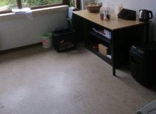

Solicitatie mails
Ik heb naar de gemeente van Rijkevorsel mijn solicitatie mail verstuurd. Maar de meeste zaken werden wel besproken via telefoon. Maar dit zijn de mails die ik heb ontvangen en heb verstuurd.
Dankmail
Stage Verslagen
Tijdens mijn stage heb ik dagelijks stage verslagen gemaakt om bij te houden wat ik elke dag gedaan had.
2019-09-30
In de Voormiddag waren we eerst naar het OCMW om daar een extra scherm voor een aantal personeelsleden aan te sluiten en hebben we ook ook 1 pc moeten vervangen. Verder had ik met mijn stagebegeleider in de voormiddag nog een aantal dingen besproken over de stage. Voor de rest van de voormiddag en een stuk van de namiddag had ik de opdracht gekregen om op 5 laptops de office paketten en een aantal standaard programma's te zetten om ze gebruiksklaar te maken voor een aantal personeelsleden. Ik had daarna een rondleiding gekregen van het gemeentehuis en hadden we daarna nog een probleem met een printer gaan oplossen. Ik had ook nog een lijst met ip-adressen gekregen waar ik naar moest pingen met powershell om na te checken of we een antwoord kregen. Voor de laatste 2 uur van de dag heb ik gewoon aan schooltaken gewerkt.
2019-10-1
In de voormiddag waren we naar een lagere school geweest in de buurt omdat er een synchronisatie probleem was met one drive op 1 van de computers van het secretariaat. Die computer was gewoon niet meer ingelogd op one drive. Toen ze terug inlogden was het probleem opgelost buiten een paar bestanden die niet synchroniseerde. In de namiddag heb ik nog een paar nieuwe laptops geüpdate en heb ik de rand van de verpakking gescand om ze te helpen met de inventarisering ervan. We zijn ook nog naar de bibliotheek geweest omdat er een video aansluiting voor een tweede scherm niet werkte. We hadden geprobeerde een nieuwe kabel in te steken en om het scherm te vervangen. Luc had daarna geprobeerd om de drivers te updaten maar we waren tot de conclusie gekomen dat er een probleem was met de aansluiting op de computer zelf. Voor derest van de dag heb ik aan taken gewerkt en gingen we problemen oplossen als die er waren in de gemeente zelf.
2019-10-2
Het was een vrij rustige dag vandaag. In de voormiddag waren we een oud kamertje met oude schermen, computers, kabels en dozen gaan verplaatsen. We waren de kabels aan het sorteren dat de juiste soort kabels bij elkaar zaten. Dan hebben we in de oude dozen wat zitten rond kijken om te kijken of er dingen inzaten die eventueel nog nuttig konden zijn. Maar buiten een paar schermen waren de meeste van die spullen te oud en onbruikbaar. In de namiddag waren we naar de bibliotheek om een probleem met de beamer na te kijken omdat hij het scherm van de laptop niet wouw laten zien. Er is morgen een presentatie daar dus het personeel daar was een beetje in paniek. mijn stagebegeleider had de stroomkabel eens uitgetrokken en terug ingestoken en het werkte wel daarna. De deuren van het jeugdhuis hebben een scanner en moet je een kaart scannen om binnen te kunnen. Maar het systeem van de scanner werkte niet en het personeel kon niet binnen. Dus waren wij eventjes gaan kijken maar er was niet veel dat we konden doen dus gaan ze gewoon moeten bellen naar het bedrijf van het systeem.
2019-10-3
De machine die gebruikt wordt voor identiteitskaarten enz. te scannen en aan te maken moest opnieuw geïnstalleerd worden. Dat hebben wij bijna heel de voormiddag gedaan omdat het een process was dat wel vrij veel tijd in beslag nam. In de namiddag was er een vergadering over Informatica en communicatie en daar mocht ik bij gaan zitten om te zien hoe dat in zen werking wat wel vrij interessant was. Mijn stagementor had op de oude server een map met allemaal foto's die hij een paar weken geleden had gekopieerd op de nieuwe server. Ik had als opdracht om de mappen met elkaar te vergelijken om te zien of al de foto's er wel waren. Dus had ik een programma geïnstalleerd (Winmerge) om dat de doen maar die map bevat bijna 500 gb aan foto's. Dus dat duurt wel eventjes.
2019-10-4
Al de mappen vergelijken was deze morgend nog altijd niet klaar. Dat was toen al bijna 12 uur bezig. Toen dat het eindelijk klaar was heb ik dan al de mappen die niet hetzelfde waren heb ik dan gelijk aan elkaar moeten maken. Daarna hebbben wij het logon script nagekeken. Verder is er niet echt veel gebeurd vandaag omdat hier op vrijdag het maar een halve dag is en om half 1 ik hier door mocht gaan.
Bedrijfsanalyse stage
Tijdens mijn stage week ga ik stage doen bij de gemeente Rijkevorsel. De reden waarom ik hier mijn observatieweek wou doorbrengen was omdat ik wel benieuwd was wat een IT afdeling allemaal moet doen in een gemeentehuis en het is zeker en vast heel interessant geweest. Het adres van het gemeentehuis is Molenstraat 5 2310 Rijkevorsel. Het ondernemingsnummer van het gemeentehuis is BE 207 504 576. Ze hebben uiteraard ook een website namelijk www.rijkevorsel.be. Het logo van de gemeente Rijkevorsel is een rode Driehoek met daarin 3 rode ruiten. Het gemeentehuis behoort tot de quartaire sector omdat ze niet proberen om winst te maken. De taak van het gemeentehuis is zorgen dat de gemeente zo optimaal mogelijk draait. Ze helpen bv. scholen in de buurt en de bibliotheek enz. als er een probleem. En dat problemen in de gemeente zo snel mogelijk kunnen worden opgelost. Ze hebben niet echt een assortiment ze proberen gewoon te zorgen dat alles goed verloopt met de gemeente en als er een probleem wordt gemeld proberen ze het op te lossen. Ze hebben natuurlijk wel verschillende diensten. Ze hebben een technische dienst, een IT afdeling, een financiële dienst en een dienst voor burgerzaken en omgeving. Leveranciers hebben ze niet echt ik heb een beetje rondgevraagd maar voor bepaalde zaken schakelen ze soms wel de hulp in van andere bedrijven. Wat ze wel hebben gezegd is dat ze voor de ICT wel vaak samenwerken met de bedrijven RealDolmen en CMake dit zijn 2 ICT bedrijven. Ze hebben ook niet echt concurrenten omdat het niet echt een bedrijf is. Ze hebben verschillende afdelingen in het gemeentehuis zoals de IT afdeling waar ik nu mijn stage doe. De IT afdeling wordt meestal opgebeld als er een probleem is dat zij kunnen oplossen. Er is ook een financiële afdeling dat dan meer de financiële zaken hier regelen. Er is ook de technische dienst hier maar de mensen die hier werken zijn het administratief personeel van de technische dienst. Je hebt ook een afdeling voor burgerzaken en de omgeving en dan uiteraard ook de receptie voor als je problemen dat je daar terecht kunt.
Huisstijl stagebedrijf
Onder elke mail zetten ze het logo van het gemeentehuis, het adres, postcode en website.
Dit is het logo van het gemeentehuis van Rijkevorsel. Het is een rode Driehoek met 3 rode ruiten erin. Ze hadden 21 maart in 2015 het logo verandert naar dit logo. Toen ze aan het zoeken waren naar een nieuw logo hebben ze inspiratie gehaald uit het wapenschild en de vlag van Rijkevorsel.
De linkse afbeelding is de vlag en de rechtse afbeelding is het wapenschild van Rijkevorsel. Dus je kan wel heel duidelijk zien hoe ze de inspiratie voor het nieuwe logo hebben gevonden.
Ze gebruiken ook voor al hun documenten het lettertype Trebuchet MS, lettergrootte 10,5 en tekstkleur is altijd donker blauw. Van wat mij verteld is wordt dit al een aantal jaar gebruikt om de gemeente. De informatie over het ontstaan van het logo heb ik gevonden op deze site: https://rijkevorsel.n-va.be/nieuws/Nieuwe-huisstijl-en-logo-voor-Rijkevorsel
Koopadvies
Als 1 van onze eerste opdrachten van het jaar moesten wij aan een persoon koopadvies geven over een laptop
Interview:
Mijn moeder had al een tijdje nood aan een laptop dus had ik haar eens geïnterviewed om te begrijpen waarvoor ze de laptop nodig heeft. Wat ze me verteld had was dat ze alleen maar een laptop nodig had voor documenten af te drukken, haar e-mail te checken en bepaalde zaken op te zoeken op het internet. Voor deze dingen heb je natuurlijk geen dure laptop nodig. Ze heeft mij ook vertelt dat dit haar eerste laptop zou zijn en dat ze ook niet teveel geld eraan wilt uitgeven. Ze had ook liefts een muis voor gemakkelijk te werken en heeft uiteraard ook een printer nodig.
inventarisering:
Aankoopvoorstel:
Laptop gebruiksklaar maken:
Interview met een werknemer(stage)
Ik heb het interview afgenomen met mijn stagementor Luc Geypen. Hij werkt bij het gemeentehuis van Rijkevorsel als informaticus. Sinds 2008 werkt hij er al dat is dus al 11 jaar. Een lange tijd heeft hij ver van huis gewerkt en wou na een tijd dichterbij gaan werken. Hij is dan vervolgens in de buurt naar werk gaan zoeken en toen kreeg hij die job aangeboden door de gemeente. Hij werkte hiervoor voor de stad Antwerpen in dezelfde functie. Zijn functie houdt in dat hij IT-problemen moet oplossen in het gemeentehuis als die voorkomen, maar ook bij plaatsen die samenwerken met de gemeente, zoals scholen in de buurt of de bibliotheek enz. Zorgen dat het personeel zo goed mogelijk kan werken met de computer of programma’s is ook iets waar hij voor zorgt. Het helpen van mensen, de uitdaging van een lastig op te lossen probleem als het voorkomt, het contact met de mensen en de afwisseling van dingen die hij moet doen zijn redenen waarom hij de job graag doet. Maar er zijn natuurlijk ook dingen die hij minder fijn vindt aan zijn job. Hij vindt het zeer frustrerend dat mensen niet altijd alles begrijpen wat hij zegt of doet. Als er een probleem is dat hij niet opgelost krijgt, vindt hij ook zeer vervelend en het feit dat er niet altijd een overzicht is als hij veel te doen heeft zijn daar voorbeelden van. Als studie heeft hij Toegepaste Informatica gevolgd aan de hogeschool Karel de Grote. Voor zijn functie moet je jezelf wel wat bijscholen vindt hij, omdat er bij de IT veel kan veranderen en je moet altijd zien dat je mee bent. Zijn job lijkt mij wel leuk om te doen later. Ik denk niet dat het echt mijn droomjob is maar het lijkt mij wel een leuke job. Je hebt altijd wel iets te doen en er is een grote diversiteit in de dingen die je moet doen. Elk probleem is meestal anders. En je bent ook vaak onder de mensen als je ze moet gaan helpen met iets, wat voor mij ook wel een pluspunt is.
Reportage photo
Voor het vak frans moesten we een aantal foto's nemen van onze stage plek en daar een kort tekstje bij maken.
.jpg)
C’est la façade de l’hôtel de ville de Rijkevorsel. J'ai fait mon stage ici.
La deuxième photo que j'ai prise est à la réception de l’hôtel de ville. Vous pouvez venir ici pour les questions que vous avez et ensuite ils essaieront de vous aider.

C'est le bureau que j'ai utilisé pendant le stage. J'ai utilisé souvent mon ordinateur portable, mais pour certaines tâches, j’ai utilisé leur ordinateur.
Voici le bureau de mon superviseur. Il ont 2 écrans pour leurs ordinateurs et il y a aussi beaucoup de feuilles.
C'est ici que le personnel vient prendre un café ou une tasse de thé. Dans le panier il y a parfois des fruits. L'appareil noir à droite de la photo est une déchiqueteuse de papier. Il y a aussi un petit réfrigérateur mais il n'est pas sur la photo.
Ce bureau n'est plus utilisé mais le photocopieur est ici.

Vous pouvez venir ici pour des affaires civiles. Par exemple, si vous avez besoin d'une nouvelle carte d'identité, vous pouvez venir ici pour cela.

Cette photo montre le bâtiment de services sociaux. Ils travaillent avec de l’hôtel de ville depuis quelques années. Donc nous sommes venus ici une fois aussi.
Foire aux questions
Bonjour et bienvenue sur le site que j'ai créé pour mon épreuve intégrée.
Vous devez faire quoi pour créer un quiz dans Microsoft Teams?
Dans un groupe de Teams, vous avez un bouton "créer ". Clique sur ce bouton et vous aurez la possibilité de faire un quiz.
Comment corrigez-vous un quiz?
Quand tout le monde répondre à quiz alors vous pouvez regarder le quiz. Ensuite vous obtenez un bouton pour corriger le quiz. Cliquez sur le bouton et vous pourrez alors corriger.
Comment faites-vous des questions d’auto-correction dans un quiz?
Avec les questions à choix multiples, vous pouvez indiquer la question qui est correcte et la question sera ensuite corrigée automatiquement. Avec des questions normale, vous pouvez alors donner la bonne réponse. Il est ensuite vérifié si la réponse donnée correspond à ce que vous avez entré comme correction.
Quels sont les types de questions que vous pouvez poser?
Quand vous créez une nouvelle question, vous avez le choix entre une question à choix multiple ou une question normale.
Video Engels
Dit is de video die wij voor het vak engels hebben gemaakt.
Dit is het script dat we hadden gemaakt. We waren wel op de dag dat we gingen filmen van idee veranderd over het filmpje dus dit script is niet hetzelfde als wat er in de video gebeurt.
Script engelsTESTOPSTELLING
Op de volgende link kan u mijn testopstelling bekijken. Bij deze opdracht moesten wij een virtueel netwerk maken.
TestopstellingCASESTUDY
Op deze link kan u mijn casestudy bekijken die ik tijdens mijn stage heb gedaan.
Casestudy